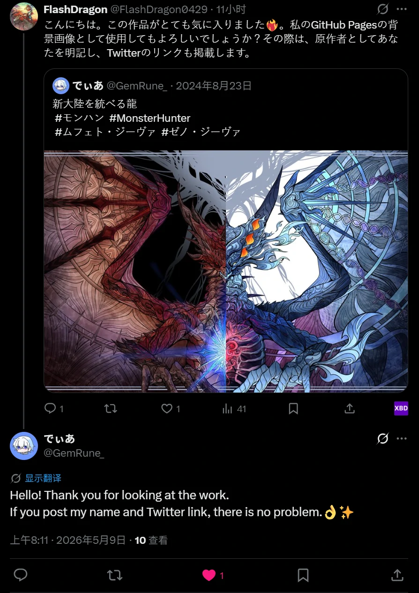

2. 内容、排版、表格与媒体
排版
display-6 展示标题
lead 用于醒目的导语。
mark 高亮、del 删除、u 下划线、small 小字、code。
blockquote 用于引用正文。
- 行内列表 A
- 行内列表 B
响应式图片与 Figure
表格
| 类名 | 作用 | 响应式 |
|---|---|---|
| table-striped | 隔行变色 | 外层 .table-responsive 允许小屏横向滚动 |
| table-hover | 悬停高亮 | |
| table-bordered | 显示全部边框 |
Bootstrap v5.3.8
本页直接加载 bootstrap.min.css 与 bootstrap.bundle.min.js。搜索类名或中文用途，即可快速定位示例。
展示全部内容
data-bs-toggle 的元素通常由 Bundle JS 提供交互。
.container 提供响应式最大宽度，.container-fluid 始终占满；每个 .row 默认分成 12 列。
<div class="container">
<div class="row g-2">
<div class="col-12 col-md-6 col-xl-3">响应式列</div>
<div class="col">自动均分剩余空间</div>
</div>
</div>lead 用于醒目的导语。
mark 高亮、del 删除、u 下划线、small 小字、code。
blockquote 用于引用正文。
| 类名 | 作用 | 响应式 |
|---|---|---|
| table-striped | 隔行变色 | 外层 .table-responsive 允许小屏横向滚动 |
| table-hover | 悬停高亮 | |
| table-bordered | 显示全部边框 |
<!-- required + .needs-validation 配合脚本显示验证反馈 -->
<form class="needs-validation" novalidate>
<label class="form-label" for="email">邮箱</label>
<input class="form-control" id="email" type="email" required>
<div class="invalid-feedback">请输入有效邮箱。</div>
</form>| 类别 | 常用类名 | 说明 |
|---|---|---|
| 间距 | m-0…5, mt-*, mx-*, p-*, gap-* | m=外边距，p=内边距；t/b/s/e/x/y 表示方向；支持 sm/md/lg/xl/xxl 响应式前缀 |
| 显示 | d-none, d-block, d-inline, d-flex, d-grid | 可写成 d-md-flex 等响应式形式 |
| Flex | flex-row, flex-column, justify-content-*, align-items-*, flex-wrap | 排列、对齐、换行、伸缩 |
| 文字 | text-start/center/end, fw-bold, fst-italic, text-wrap, text-truncate | 对齐、字重、样式与溢出 |
| 颜色 | text-*, bg-*, text-bg-* | primary/secondary/success/danger/warning/info/light/dark/body |
| 边框 | border, border-0, border-*, rounded, rounded-circle | 边框颜色、宽度、方向与圆角 |
| 尺寸 | w-25/50/75/100, h-*, mw-100, vh-100 | 相对父元素或视口设置尺寸 |
| 定位 | position-relative, absolute, fixed-top, sticky-top, top-*, start-* | 定位方式与位置 |
| 其他 | shadow, opacity-*, overflow-*, user-select-*, visually-hidden | 阴影、透明、溢出、选择与无障碍隐藏 |
以下组件无需自己编写开关逻辑，Bundle 会读取 data-bs-* 属性。Tooltip、Popover 和 Dropdown 的定位依赖 Bundle 内置的 Popper。
data-bs-parent 时，同一时间只展开一项。Modal 居中显示对话框；Offcanvas 从页面边缘滑入。
向下滚动这块区域，左侧导航会自动高亮当前位置。这里加入一些内容来制造滚动空间。
ScrollSpy 适合文章目录、文档章节和落地页导航。
目标标题必须有唯一 ID，导航链接的 href 对应该 ID。
可滚动容器需要固定高度、纵向溢出以及可聚焦的 tabindex。
内容动态变化后，可调用实例的 refresh() 重新计算位置。
这是最后一段的额外滚动空间。
除了 data-bs-*，组件也可以通过构造函数控制。常见方法包括 show()、hide()、toggle()、dispose() 和 getOrCreateInstance()；事件通常分为动作开始和完成，如 show.bs.modal / shown.bs.modal。
// 获取或创建组件实例
const modal = bootstrap.Modal.getOrCreateInstance('#exampleModal');
modal.show();
// 监听动画结束后的事件
document.querySelector('#exampleModal').addEventListener('shown.bs.modal', () => {
console.log('Modal 已显示');
});offcanvas-start/end/top/bottom 控制出现方向。
